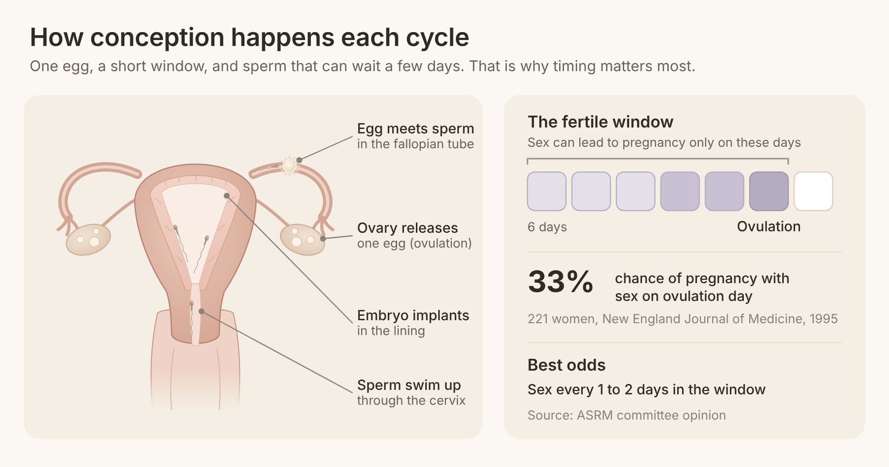
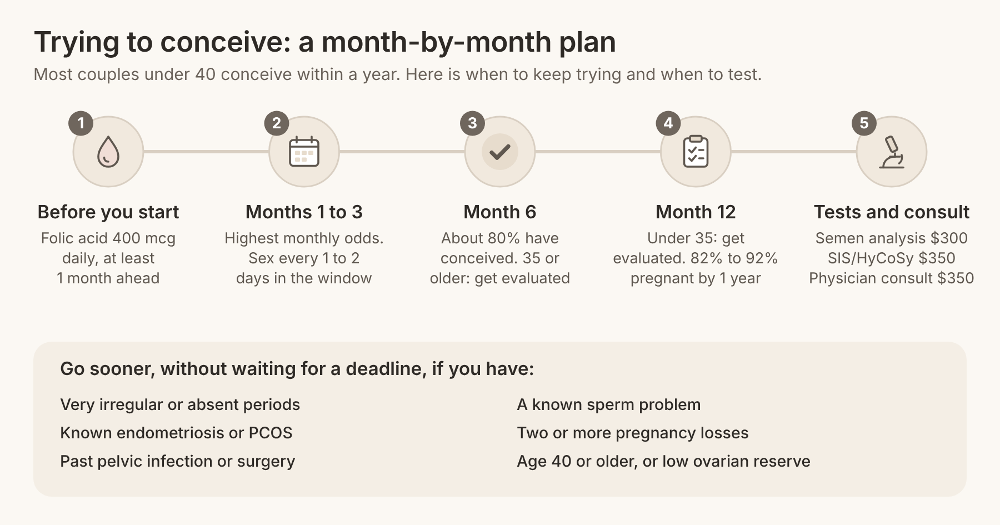

Quick answer: When you are trying to conceive, fertility works on a monthly window, not a single day: pregnancy is only possible from sex in the 6 days ending on ovulation. Most couples under 40 conceive within a year, and about 80% do so in the first 6 months. Get checked after 12 months if you are under 35, after 6 months at 35 or older, or sooner if something in your history worries you.
In this article
Trying to conceive fertility is simply your chance of pregnancy in any one cycle, added up over the months you try. Even for healthy couples, that monthly chance is far from 100%, which is why waiting a few cycles is normal and not a sign that something is wrong.
Doctors call the monthly chance "fecundability". Each cycle, one egg is released, it lives for about a day, and sperm can wait in the body for several days. Pregnancy happens when those two timelines overlap, and then the early embryo still has to implant in the lining of the uterus.
That is why advice about "trying to conceive tips" often feels vague. The real levers are few and clear: timing, frequency, the health of both partners, and knowing when to ask for tests. The rest of this guide walks through each one with the numbers behind it, as of 2026.
Most people who search this are not in crisis. They are a few months in, a period has just arrived, and they want to know if this is normal. One woman on a parenting forum wrote, "We have been TTC for 6 months/cycles. Would you be worried?" That question sits behind almost every search.
Each cycle takes about four weeks, so six tries is half a year. Friends who got pregnant in the first month make it feel like you are behind. In reality, a first-month pregnancy is the lucky end of a normal spread, and many replies on that same forum thread say things like "It took 13 months to conceive" a first child.
Some sources say have sex every day, others say every other day, and apps promise to pinpoint ovulation. You also see long lists of foods, supplements and things to avoid. It is hard to know which steps matter and which are noise.
Most pages repeat the 12-month rule and stop there. People want to know what their odds are at month 3, month 6 and month 12, and whether they can get simple tests earlier. One patient looking back wrote that she "wish I'd gone sooner" once a hormone test showed a problem.
Sperm is half of the equation, yet most articles barely mention the male partner. Many couples search "what should a man do when trying to conceive" because the usual guides skip it.
Conception is a chain of events that must line up within a few days each cycle. Knowing the order helps you time sex and understand what tests check.
An egg matures. In the first half of your cycle, a follicle in one ovary grows and prepares an egg.
Ovulation. A surge of luteinizing hormone (LH) releases the egg, usually about 14 days before your next period. Cycles of 21 to 35 days can all be normal, so the day varies.
Sperm travel. Sperm swim through the cervix and uterus into the fallopian tubes, where they can survive for several days while waiting for the egg.
Fertilization. In the tube, one sperm enters the egg. This only works for about a day after ovulation.
Travel and implantation. The embryo moves down the tube over several days and implants in the lining of the uterus (endometrium).
The key fact comes from a classic study in the New England Journal of Medicine. Researchers followed 221 healthy women planning a pregnancy and found that conception happened only when sex took place in a 6-day window ending on the day of ovulation. Sex on ovulation day itself carried about a 33% chance of pregnancy.
The ASRM committee opinion on optimizing natural fertility says chances are highest with sex every 1 to 2 days during the fertile window. Two or three times a week is nearly as good, so you do not need a strict schedule. The same opinion notes that going more than 5 days without ejaculation may lower sperm counts, so there is no benefit in "saving up".
Apps that predict ovulation from period dates alone are often wrong. In a study cited by ASRM, the best app was accurate for the exact ovulation day only 21% of the time. Urine LH tests and noticing slippery, clear cervical mucus are more useful: pregnancy rates were highest, around 38%, when sex happened on the day of peak mucus.
The research is reassuring: most couples with a woman under 40 conceive within a year, and nearly all within two. The UK's NICE fertility guideline states that over 80% of couples conceive within 1 year and over 90% within 2 years, with regular sex about twice a week.
Here is how those numbers change with the woman's age, from the same NICE table.
Woman's age | Pregnant after 1 year (12 cycles) | Pregnant after 2 years (24 cycles) |
19 to 26 | 92% | 98% |
27 to 29 | 87% | 95% |
30 to 34 | 86% | 94% |
35 to 39 | 82% | 90% |
Two things stand out. First, the drop with age is gentle across your twenties and early thirties. Second, even at 35 to 39, more than 8 in 10 couples conceive within a year. Under 40 is a good position to act from.
The ASRM opinion adds two useful facts. About 80% of couples conceive in the first 6 months, and the monthly chance is highest in the first 3 months, because couples with no barrier tend to conceive early. Relative fertility at 40 is about half what it is in the late twenties and early thirties, while men's fertility changes little before about age 50.

Many people buy an anti-Müllerian hormone (AMH) test to predict how fast they will conceive. A 2017 JAMA study followed 750 women aged 30 to 44 who had been trying for 3 months or less. Women with low AMH (below 0.7 ng/mL) were just as likely to conceive as women with normal AMH.
AMH group | Conceived by 6 cycles | Conceived by 12 cycles |
Low AMH (below 0.7 ng/mL) | 65% | 84% |
Normal AMH (0.7 to 8.4 ng/mL) | 62% | 75% |
The authors concluded that these tests should not be used to judge natural fertility in this group. AMH is useful for planning IVF or egg freezing, which our guide to what a good AMH level is explains, but it does not tell you whether you will get pregnant this month.
Months 1 to 6 without a pregnancy are normal for many healthy couples, and the formal deadline for testing depends on age. The ASRM definition of infertility (2023) says evaluation should start after 12 months when the woman is under 35, and after 6 months at 35 or older.
Here is a practical way to read your own timeline.
Months 1 to 3. This is when monthly odds are highest. Focus on timing and on the basics below. A negative test here says very little.
Months 4 to 6. About 80% of couples have conceived by now. If you have not, it is still common, but this is a sensible point to book a semen analysis and a basic check-up, especially if you are 35 or older.
Months 7 to 12. If you are under 35 with regular cycles, keep trying with good timing. Arrange a full fertility workup at 12 months, or earlier if you prefer to know.
After 12 months. Both partners should be evaluated. Many causes show up on simple tests.
You do not need to wait for a deadline if any of these apply. The ASRM definition also states that nothing in it should be used to deny or delay care to anyone, regardless of relationship status or sexual orientation.
Periods that are very irregular, absent, or more than 35 days apart.
Known endometriosis, polycystic ovary syndrome (PCOS), or past pelvic infection.
Past surgery on the ovaries, tubes or testicles, or cancer treatment.
A known sperm problem or erectile or ejaculation difficulties.
Two or more pregnancy losses.
You are 40 or older, or you know your ovarian reserve is low.
For people over 40, with low AMH or with failed IVF before, our sister clinic, Rejuvenating Fertility Center, specializes in complex cases.
He should get a semen analysis early, not as a last step. The AUA/ASRM guideline on male infertility (2020) says the first evaluation of a man should include his reproductive history and one or more semen analyses, ideally two about a month apart if the first is abnormal. It is quick, non-invasive and inexpensive. Aurea's male fertility testing includes a semen analysis for $300, read with AI-enhanced semen analysis technology.
Beyond testing, the same lifestyle basics apply to him as to you: stop smoking, keep alcohol moderate, and talk to a doctor before stopping or starting any medicine, including testosterone, which can lower sperm production.
Trying naturally makes sense for most couples under 35 with regular cycles and no known issues. Getting help early makes sense when time matters to you, when you are 35 or older, or when a test shows something to fix.
Here is how the options compare.
Keep trying with good timing. Free, private, and effective for most couples. Best in the first 6 to 12 months if you are under 35.
Timed intercourse with monitoring. Ultrasound scans and hormone checks pinpoint ovulation so you are not guessing. Aurea's timed intercourse program costs $250, or $650 for 3 months.
IUI (intrauterine insemination). Washed sperm is placed directly in the uterus around ovulation. IUI at Aurea costs $800, or 3 cycles for $2,100.
IVF. Usually for blocked tubes, low sperm counts, or after other options. Our IVF under 40 page explains how a personalised, gentle protocol works.
The useful list is short. These come from the ASRM opinion and the CDC.
Take folic acid. The CDC recommends 400 mcg of folic acid every day, starting at least 1 month before conception, to prevent birth defects of the brain and spine.
Stop smoking, both of you. ASRM reports that women who smoke are more likely to be infertile, with an odds ratio of 1.60.
Keep caffeine moderate. High intake (500 mg, more than 5 cups of coffee a day) is linked to lower fertility, while 1 to 2 cups a day shows no clear harm.
Limit alcohol. ASRM advises avoiding more than two drinks a day while trying, and stopping alcohol completely once pregnant.
Aim for a healthy weight. Fertility is lower in women who are very thin or have obesity. Small changes help, and you do not need to reach a "perfect" number before you start.
Do not worry about lubricant use in general. Some lubricants slow sperm in the lab, but in couples trying to conceive, lubricant use did not change monthly pregnancy rates. If you prefer, choose one labelled sperm-friendly.
There is no single fertility diet. ASRM's review finds weight, smoking, alcohol and caffeine matter more than any one food. A balanced pattern with vegetables, fruit, whole grains, fish and healthy fats supports a healthy weight and a healthy pregnancy, and a prenatal vitamin with folic acid covers the key gap.
If you decide to get checked, a basic fertility workup for both partners usually takes one or two cycles and starts with simple, low-cost tests. Here is what to ask for and what it costs at Aurea, as of 2026. Prices can change, and your consult confirms the plan.
Test or visit | What it checks | Aurea price |
Nurse call | Your history and whether testing now makes sense | Free (20 minutes) |
Physician consult | Full review and a personalised plan | $350 |
Semen analysis | Sperm count, movement and shape | $300 |
SIS/HyCoSy | Whether tubes are open and the uterus is normal | $350 |
Blood tests | Ovulation, thyroid, prolactin and ovarian reserve | Set at your consult |
Track two or three cycles with LH tests or cervical mucus so you know roughly when you ovulate.
Start folic acid now if you have not already.
Book a semen analysis around month 6, or sooner if anything in his history raises a question.
Check your tubes if you have had pelvic infection or surgery. Our HSG test guide compares the two main options, and our page on blocked fallopian tubes explains treatment.
Plan your evaluation date: 12 months if you are under 35, 6 months at 35 or older.
Do my cycles suggest I am ovulating regularly?
Which blood tests make sense for me now, and which can wait?
Should my partner have a semen analysis before anything else?
If we need treatment, what is the gentlest option that fits our results?
Most patients at Aurea can see a physician the same week, and outside monitoring lets you do scans close to home. You can compare all options on our pricing page.

Most couples under 40 conceive within a year of regular sex, and about 80% within the first 6 months. By the woman's age, between 82% and 92% are pregnant after 1 year, according to NICE. A few months without success is normal.
The best time is in the 6 days ending on ovulation, especially the 2 days before and the day itself. Sex every 1 to 2 days in that window gives the highest chance. If timing is stressful, sex two or three times a week works nearly as well.
No. In a 2017 JAMA study of 750 women aged 30 to 44, women with low AMH conceived at similar rates to women with normal AMH. AMH helps plan IVF or egg freezing, but it does not predict natural conception.
ASRM advises an evaluation after 12 months of trying if you are under 35 and after 6 months if you are 35 or older. Go sooner if your periods are irregular, you have a known condition, or your partner has a known sperm issue.
He should get a semen analysis early, stop smoking, keep alcohol moderate, and check any medicines with a doctor, especially testosterone. Male factors are common and easy to test for. A semen analysis at Aurea costs $300.
Apps that use only period dates are often wrong. In one study, the most accurate app predicted the exact day of ovulation only 21% of the time. Urine LH tests and tracking cervical mucus are more reliable.
Trying to conceive is usually a matter of months, not days, and most couples under 40 get there within a year. Good timing, a few proven habits, and knowing exactly when to ask for tests give you the best chance without the guesswork. If the waiting feels heavy, asking questions early is a sensible choice, not an overreaction.
At Aurea Fertility Center, we keep the first step simple, warm and fast. Book a free 20-minute nurse call or a $350 physician consult, and we will help you decide whether to keep trying, test now, or start a gentle plan together.